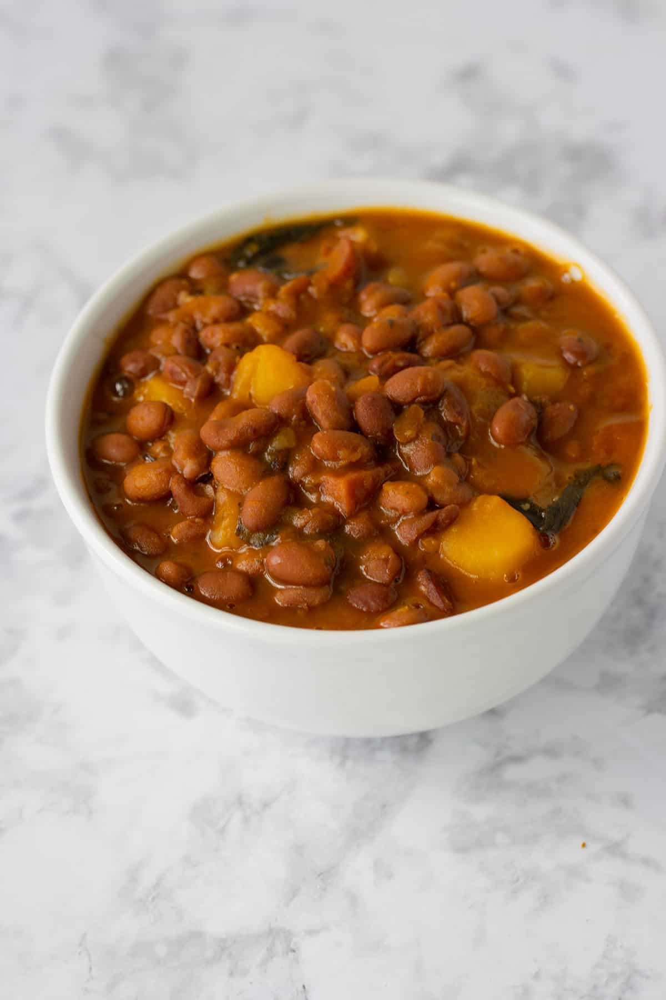

Habichuelas

Habichuelas Guisadas
Habichuelas are delicious stewed beans and they are really easy to cook.
They are usually served on top of white rice and you can accompany it with any meat, poultry or fish.
Ingredients:
- 1 potato and/or pumpkin
- 1 tbsp of garlic (ground, minced, or powder)
- 2 tbsp of sofrito sauce
- 2 tbsp tomato sauce
- 1 can of Goya pink beans
- 2 tbsp of seasoning (sazon)
- salt
- culantro and/or cilantro leaves
- bell pepper (optional)
Steps:
- Heat a pot to high temperature on your stove, and add half a cup of water.
- When water is boiling, add chopped potato and/or pumpkin cubes, garlic, sofrito sauce, tomato sauce, and seasoning.
- When potatoes and/or pumpkins are tender, add the beans and add another half cup of water.
- When it boils, turn heat to medium, and then add diced culantro and/or cilantro, chopped bell pepper, and salt to taste.
- When the stew turns a little creamy and not so liquid, it is ready to serve!